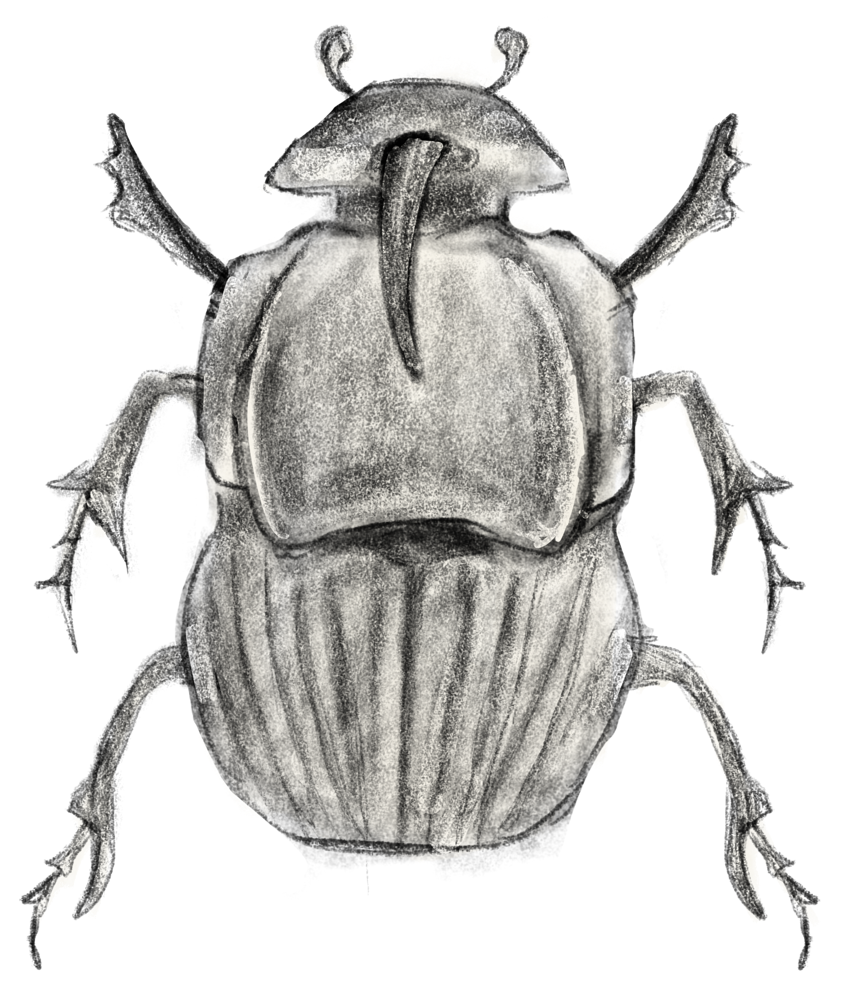
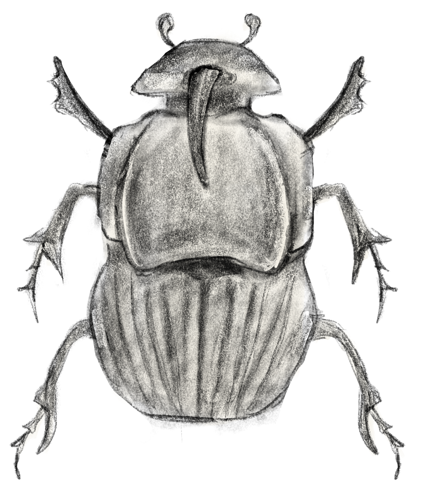

A colourful, bulky beetle with a shiny exoskeleton. It is native to North America and commonly found near pasture animals.
The relationship between rainbow scarabs and horses is an example of mutualism, where both parties benefit from the interaction. The scarab eat and utilize horse dung for reproduction, and by doing so provide benefits to the ecosystem. They control the fly and parasite population, recycle the nutrients in the dung, and clean fecal matter.
Phylum: Arthropoda Class: Insecta Order: Coleoptera Family: Scarabaeidae Genus: Phanaeus
 
